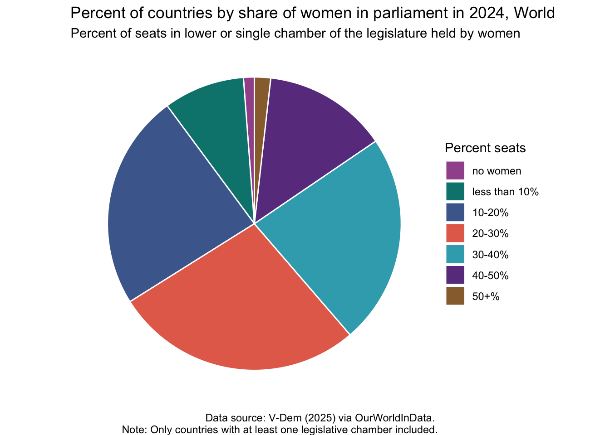
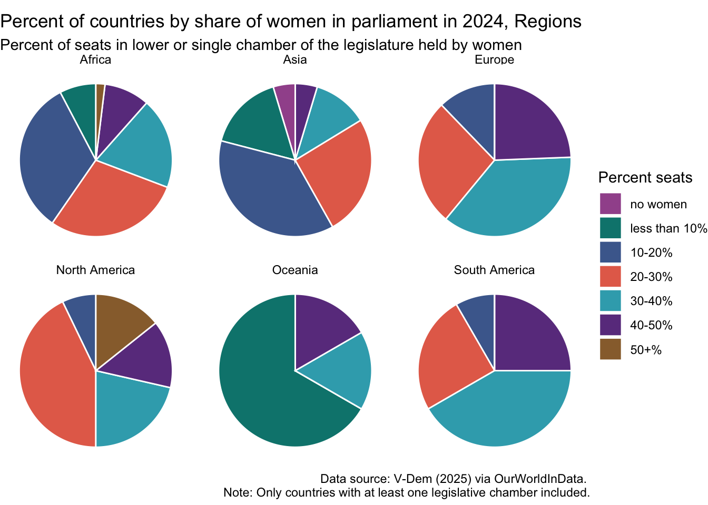

library(tidyverse)
library(janitor)
library(scales)
library(ggeasy)
library(ggannotate)
library(plotly)day 3 circular
load packages
This plot illustrates changing representation of women in government leadership. It is great that in 2024 fewer than 2% of governments have no women in leadership, but it is not amazing that fewer than 2% have 50% or more. I am wondering if I can look at this pattern across different areas of the world by making circular graphs in ggplot.
read in the data
I am mostly interested in the current state of affairs so I read in the data from the owidapi, filter the data to only include 2024 and rename variables to make them more friendly.
share <- read_csv("https://ourworldindata.org/grapher/countries-by-share-of-women-in-parliament.csv?v=1&csvType=full&useColumnShortNames=true") %>%
clean_names()
share2024 <- share %>%
filter(year == 2024) %>%
select(-code) %>%
rename(number_0pct = num_countries_wom_parl_category_0pct_women,
number_0_10pct = num_countries_wom_parl_category_0_10pct_women,
number_10_20pct = num_countries_wom_parl_category_10_20pct_women,
number_20_30pct = num_countries_wom_parl_category_20_30pct_women,
number_30_40pct = num_countries_wom_parl_category_30_40pct_women,
number_40_50pct = num_countries_wom_parl_category_40_50pct_women,
number_50pluspct = num_countries_wom_parl_category_50pctplus_women)
glimpse(share2024)Rows: 7
Columns: 9
$ entity <chr> "Africa", "Asia", "Europe", "North America", "Oceania…
$ year <dbl> 2024, 2024, 2024, 2024, 2024, 2024, 2024
$ number_0pct <dbl> 0, 2, 0, 0, 0, 0, 2
$ number_0_10pct <dbl> 4, 7, 0, 0, 4, 0, 15
$ number_10_20pct <dbl> 17, 16, 5, 1, 0, 1, 40
$ number_20_30pct <dbl> 15, 11, 11, 6, 0, 3, 46
$ number_30_40pct <dbl> 10, 5, 15, 3, 1, 5, 39
$ number_40_50pct <dbl> 5, 2, 10, 2, 1, 3, 23
$ number_50pluspct <dbl> 1, 0, 0, 2, 0, 0, 3clean it up
I want to plot data for the World and each region separately so create separate dataframes here using filter(). I also want to make the data long using pivot_longer, mutate new variables that represent the number of countries as percent, improve the labels on the percent categories and make them a factor so that they order correctly in my plot.
# create world dataframe
share2024_world <- share2024 %>%
filter(entity == "World") %>%
pivot_longer(names_to = "category", values_to = "number", number_0pct:number_50pluspct) %>%
mutate(total = sum(number), percent = number/total) %>%
mutate(percent_women = case_when(category == "number_0pct" ~ "no women",
category == "number_0_10pct" ~ "less than 10%",
category == "number_10_20pct" ~ "10-20%",
category == "number_20_30pct" ~ "20-30%",
category == "number_30_40pct" ~ "30-40%",
category == "number_40_50pct" ~ "40-50%",
category == "number_50pluspct" ~ "50+%")) %>%
mutate(percent_women = fct_relevel(percent_women,
c("no women" , "less than 10%" ,"10-20%" ,
"20-30%" ,"30-40%" , "40-50%" ,
"50+%")))
# create regions dataframe
share2024_regions <- share2024 %>%
filter(entity != "World") %>%
pivot_longer(names_to = "category", values_to = "number", number_0pct:number_50pluspct) %>%
group_by(entity) %>%
mutate(total = sum(number), percent = number/total) %>%
mutate(percent_women = case_when(category == "number_0pct" ~ "no women",
category == "number_0_10pct" ~ "less than 10%",
category == "number_10_20pct" ~ "10-20%",
category == "number_20_30pct" ~ "20-30%",
category == "number_30_40pct" ~ "30-40%",
category == "number_40_50pct" ~ "40-50%",
category == "number_50pluspct" ~ "50+%")) %>%
mutate(percent_women = fct_relevel(percent_women,
c("no women" , "less than 10%" ,"10-20%" ,
"20-30%" ,"30-40%" , "40-50%" ,
"50+%"))) plot
world
Starting with world and using inspo from the R Graph gallery here I make an ugly pie chart. There is no pie geom in ggplot, so the workaround is to make a column chart and use coord_polar() to make it circular.
share2024_world %>%
ggplot(aes(x = "", y = percent, fill = percent_women)) +
geom_col(colour = "white") +
coord_polar("y", start = 0) +
theme_void() +
easy_add_legend_title("Percent seats") +
scale_fill_manual(values = c("#a2559b", "#00847d", "#4b6a9c", "#e56e59", "#38aaba", "#6b3d8d", "#986d39" )) +
labs(title = "Percent of countries by share of women in parliament in 2024, World",
subtitle = "Percent of seats in lower or single chamber of the legislature held by women",
caption = "Data source: V-Dem (2025) via OurWorldInData. \nNote: Only countries with at least one legislative chamber included.")
The more interesting question is does this pattern of representation differ across regions?
regions
share2024_regions %>%
ggplot(aes(x = "", y = percent, fill = percent_women)) +
geom_col(colour = "white") +
coord_polar("y", start = 0) +
facet_wrap(~entity) +
scale_fill_manual(values = c("#a2559b", "#00847d", "#4b6a9c", "#e56e59", "#38aaba", "#6b3d8d", "#986d39" )) +
theme_void() +
easy_add_legend_title("Percent seats") +
labs(title = "Percent of countries by share of women in parliament in 2024, Regions",
subtitle = "Percent of seats in lower or single chamber of the legislature held by women",
caption = "Data source: V-Dem (2025) via OurWorldInData. \nNote: Only countries with at least one legislative chamber included.")
There is a lot that surprises me about this plot. Oceania is not doing well; the majority of countries have less than 10% of government seats held by women. This dataset only includes the number of countries in each region that have women represented in each of the percent categories. This includes 6 Oceanic countries, but it doesn’t include information about which 6 countries are included. I am interested to dig into the country level data here.
I was also surprised that Asia is the only region that still has 2 countries that have no women in government. Again, I am curious about which 2; Afghanistan maybe? Perhaps there are Middle East countries that do not have women in government.